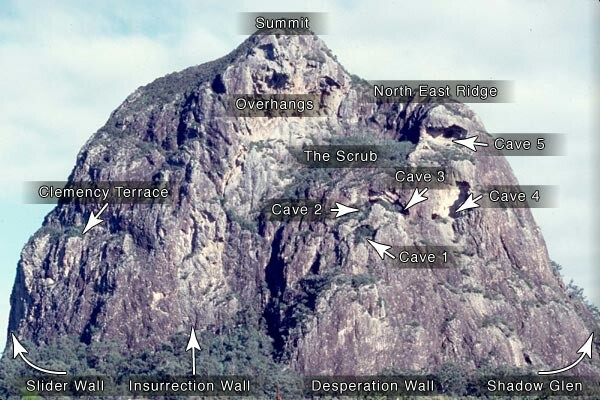

Home > The Guide > Mt Tibrogargan
|
Home > The Guide > Mt Tibrogargan |
|
How to get to the carpark
Travelling north, after taking the Glasshouse Mountains Tourist Route off the Bruce Highway, drive for 6.5 km to a L turn marked 'Forestry Nursery' (before reaching the turn-off for the Glasshouse Township). Take it. Drive L under the railway bridge, then up R and along the dirt track past the nursery on your R, then take the signposted L-turn towards the mountain (sandy dirt track). You'll pass two more brown and yellow National Park signs saying ‘Mt Tibrogargan’ before reaching a carpark on the L (1.3km from the main road turnoff).
How to get to the rock
Opposite the carpark is a warning sign. A well-beaten track leads to the east face from the sign. After approximately 15 minutes, the track meets the rock between Carborundum Chimney and Patience Crack.
